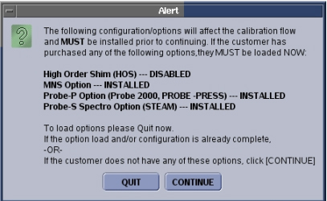
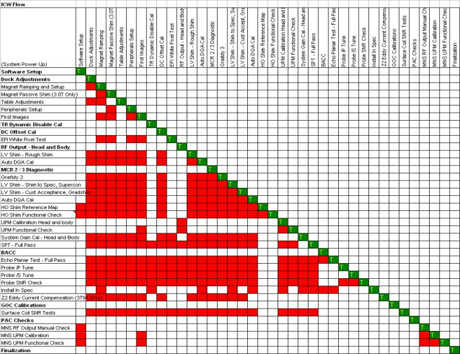
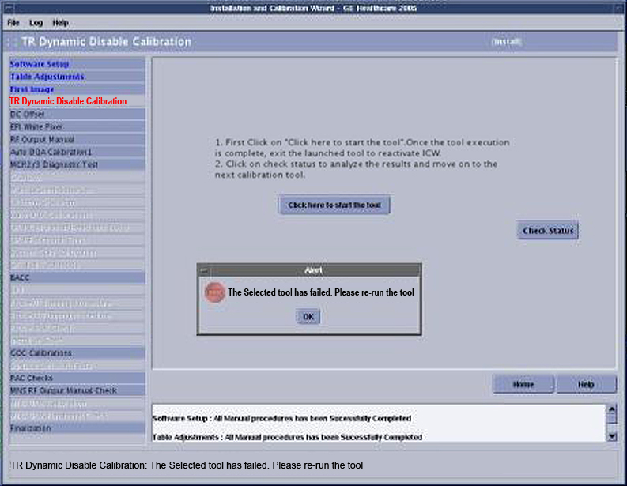
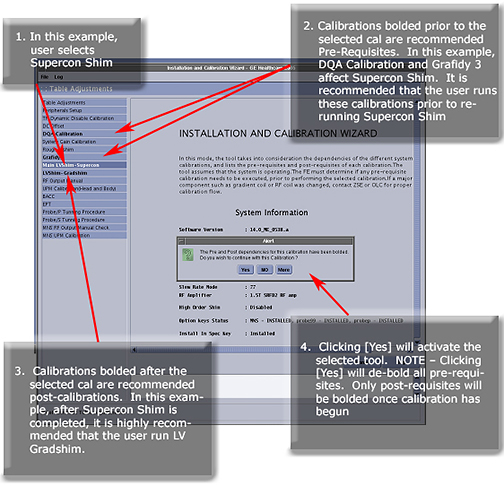
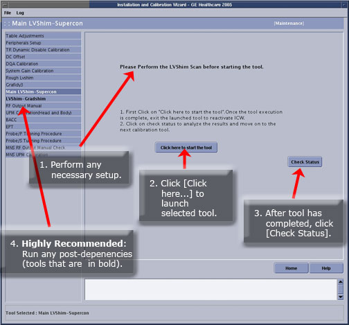
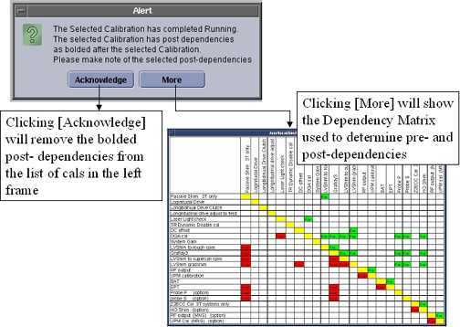

Installation and Calibration Wizard
Prerequisites
The Installation and Calibration Wizard (ICW) is designed to guide the user through the proper sequence of installation workflow. The tables below provide an overview of the calibrations to expect with various upgrade scenarios.
* Should only display if the option key for the item is installed, either as part of this upgrade or prior to the upgrade.
* Should only display if the option key for the item is installed, either as part of this upgrade or prior to the upgrade.
* Should only display if the option key for the item is installed, either as part of this upgrade or prior to the upgrade.
The Install InSpec key must be present.
The Install InSpec Key must be present.
* Should only display if the option key for the item is installed, either as part of this upgrade or prior to the upgrade. The Install InSpec key must be present.
1 Starting Installation and Calibration Wizard
Procedure
- Insert the Service Key.
- Launch the Service browser from the Common Service Desktop.
- Click the Calibration tab:
-
If in Install or Upgrade mode, click Installation and Calibration and the link: Click here to start this toolor
-
If in Maintenance mode, click Calibration and the link: Click here to start this tool.
-
- The first time the ICW is used, a status of the option keys
for HOS, MNS, Probe-P and Probe-S is performed. A popup will display
similar to the one shown below summarizing the results. Review the
status of these option keys, and confirm the correct configuration.
- Select Quit if the site configuration is unknown or does not match the option key status. Update the option key and restart ICW.
- If the configuration is correct, select Continue.
Figure 1. ICW Alert Pop-Up

note:The option key check is only done the first time that the tool is used. Any change to the option key status after the ICW has started will not be registered by the tool.
- The ICW will launch the mode that corresponds to the system status: Install, Upgrade or Maintenance. Refer to the related section below for more details.
2 Install Mode - New System Installation
Procedure
- Click the Help button in the lower right corner of the menu bar to open the service document for the active calibration step.
- Some calibrations have certain dependencies. To understand the
dependencies the tool is using during the Install mode, see Figure 2.
How to read the dependency matrix: The same tasks/calibrations are listed along the top and side. The ideal order of task/calibration completion is from top to bottom.
-
Any task/calibration without red squares to the right is has no pre dependencies, and can be run at any time.
-
If there are red squares to the right of any task/calibration, the task/calibration associated with each red square must be completed successfully before it becomes available.
Figure 2. Install Mode Dependency Matrix (Basis for Logic of ICW in Install Mode)

note:In Install mode, ICW will not allow completion of a calibration the first time until all the necessary prerequisite tasks/calibrations are completed.
-
Some calibration steps will have machine data (data stored on the system). An example is LVShim data, stored in the /usr/g/service/data directory.
-
Other calibrations will not have machine data.
-
- For those calibrations with machine data, click the link Click here to start the tool. When the tool interface displays, follow the links (available in Calibrations) for specific instructions regarding setting up and running any particular tool.
- For those calibrations that have no machine data, acknowledge
completion of each task listed by clicking the box next to it (a check
mark will display), and selecting Submit.
Figure 3. Advancing through Manual Items during Installation

- When the calibration completes and/or aborts, close the tool
by clicking the – in the upper left corner
of the tool, then selecting Close.
Figure 4. Navigating through Calibrations with Machine Data

- Click Check Status. This will register
the tool’s Pass/Fail status.
-
If the tool passes, the next calibration in the flow will become active.
-
If the tool failed or the check status is incomplete, the tool will turn red and continuation is not allowed until that calibration passes.
-
- ICW will remain in Install mode until every task listed on the left side is successfully completed. After completion of all tasks in Install mode, exit ICW. The next time ICW is launched, it will open in Maintenance mode (see Maintenance Mode).
3 Special Considerations
Procedure
- Relaunching machine data calibrations:
-
If an attempt is made to launch a calibration in the ICW after it has already passed, the system will warn that the selected calibration may be dependent on other calibrations.
-
It may be necessary to rerun the calibrations listed prior to rerunning the selected calibration. While not enforced by the interface, it is highly recommended that a notation is made of these pre-dependencies and they are run before completing the selected calibration.
Figure 5. Pop-Up Message for Rerun of Calibration that Already Passed

-
- Tool failures: If a task is incomplete or a calibration fails,
the interface will change the name of that task/calibration to red.
Post dependencies will not be available until that task/calibration
passes.
Figure 6. Tool Failure

4 Calibrations
Explanations for each of the calibrations listed in ICW are available through the following links:
Procedure
- T/R Dynamic Disable Calibration
- DC Offset
- EPI White Pixel - Full Test Mode:
- RF Output Manual
- Rough LV Shim: Acquire scan before selecting: Click here to start this tool.
- Auto DQA Calibration
- Use the appropriate MCR tool:
- (For upgrades to HDx and HDxt) MCR 2 Tool or
- (For HDx and HDxt forward production) MCR 3 Tool
- Grafidy3
- HO Shim Calibration Reference Map Creation & Procedures
- High Order Shim Functional Check
- Main LVShim - Supercon
- LV Shim - GradShim
- UPM Calibration - Head and Body
- UPM Functional Check
- System Gain Calibration
- SPT Full Test Mode
- Bandpass Asymmetry Correction Tool (BAT) (also known by the former name, BACC)
- EPT
- Probe-P Tuning Procedure
- Probe-S Tuning Procedure
- Probe SNR Check
- For 3T/94 systems only: Z2 Eddy Current Compensation (Z2 ECC)
- Surface Coil SNR Checks
- MNS RF Output Manual Check
- MNS UPM Calibration
- UPM MNS Functional Check
5 Install Mode - Systems Upgrading from Previous Platform to HDx or HDxt
When upgrading to HDx or HDxt from a previous platform, ICW will open showing only those calibrations required for the type of upgrade being performed.
Procedure
- When upgrading from HD (12.x) to HDx (14.x) or HDxt (15.x or
16.x), RestoreInfo restores the Grafidy files, but they must be converted
to HDx format before the system recognizes the files. To convert,
access Grafidy, then exit by clicking the Tool Exit button. Upon exiting, the former 12.x Grafidy
files will be converted to the new format.
-
ICW determines what calibrations to show from two sources: Guided Install and RestoreInfo.
-
If ICW cannot determine any critical information, it will display all calibrations required for a new system installation. Items that cause the ICW to display all calibrations for a new installation:
-
RestoreInfo was not performed on the system.
-
Previous software revision from the RestoreInfo MOD could not be detected.
-
Install InSpec key from the RestoreInfo MOD could not be detected.
-
-
- In Install mode for upgraded systems, the order of the calibration steps follows the same logic as in the ICW Install mode dependency matrix shown in Figure 2 with fewer calibrations than in full Install mode. For those tests that have no machine data, verify that the tasks were performed by clicking the box next to each (a check mark will display), then click Submit. (See Figure 3.)
- When the calibration is completed and/or aborted, close the tool for the ICW interface to become active: Click the – in the upper left corner of the tool, then select Close. (See Figure 4.)
- Click Check Status to register the tool’s
Pass/Fail status:
-
If the tool passes, the next calibration in the flow becomes active.
-
If the tool fails or the check status is incomplete, the tool will turn red and the user is unable to continue until that calibration passes.
note:ICW will remain in Install mode until all steps in ICW Finalization are successfully completed and the Submit button is selected. The next time the ICW is launched, it will open in Maintenance mode.
-
6 Maintenance Mode
Figure 7. Starting Maintenance Mode

Procedure
- Click Yes to acknowledge the pre- and post-dependencies. All pre dependencies are unbolded, and the selected tool becomes active.
- Perform all necessary setup before launching the tool. (See
the illustration below for instructions on how to start calibrations
in Maintenance mode.)
Figure 8. Running Calibrations in Maintenance Mode

- When Check Status is clicked, one final
popup message displays with an alert about the post-dependencies.
- Click Acknowledge to unbold the post-dependencies.
- Click More on the Alert screen to display the dependency matrix used to determine the pre-
and post-dependencies.
-
To read the dependency matrix for Maintenance mode: In the vertical column, find the calibration that is to be run, and follow that line horizontally to the yellow square. Any task located directly above the yellow square is a pre-dependency, and any task directly below the yellow square is a post-dependency.
-
For troubleshooting purposes, before performing a certain calibration/task, identify the pre dependencies related to that calibration and consider performing them. If pre-dependencies are not run, the system will not be negatively affected.
Figure 9. Alert Screen

-
- It is recommended that any calibration highlighted as a post-dependency
also be run immediately after the selected calibration.note:
Post-dependencies are important. For example, if Grafidy is run, the Supercon LVShim (HDx) or Fine LVShim (HDxt), Gradcal EPT, and Probe values may have changed. Each one of these calibrations should be run after the completion of Grafidy because they are post-dependencies of that calibration.
- After ICW is launched in Maintenance mode, keep track of what
calibrations were run during the current session by changing the font
color of the calibration name to blue. As long as ICW remains open,
it will track all calibrations for which Check Status was clicked.note:
ICW will only track those calibrations performed while that instance of ICW is running. If the ICW is closed and reopened, the font color for all calibration names returns to black.
7 Finalization
Procedure
- To exit from ICW, click File > Quit. The popup shown below displays.
Figure 10. Exiting ICW

- Choose Yes to exit from ICW and perform a SaveInfo.
- Choose No to remain in ICW.
- Choose Exit to exit from ICW without performing a SaveInfo.